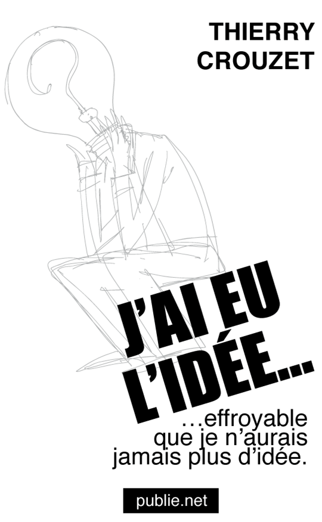
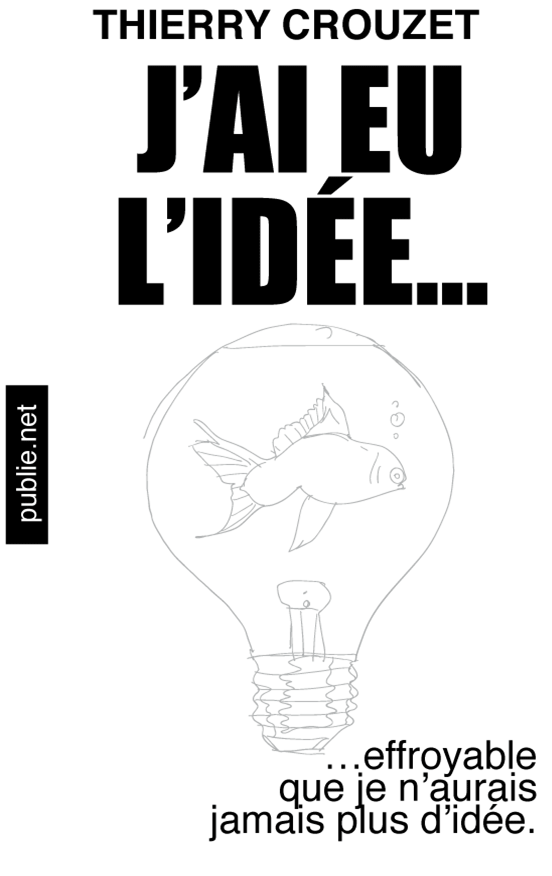

Choisissez votre couverture préférée
 Dans quelques jours, je
publierai la version intégrale de J'ai eu l'idée.
Pacco va dessiner la couv. Il
nous propose quatre pistes. Toutes me paraissent intéressantes,
mais il nous faut en choisir une. Laquelle préférez-vous ? C'est
surtout l'image qu'il faut choisir, ils sera toujours temps de
travailler la typographie après.
Dans quelques jours, je
publierai la version intégrale de J'ai eu l'idée.
Pacco va dessiner la couv. Il
nous propose quatre pistes. Toutes me paraissent intéressantes,
mais il nous faut en choisir une. Laquelle préférez-vous ? C'est
surtout l'image qu'il faut choisir, ils sera toujours temps de
travailler la typographie après.


Le sondage est bouclé. Et le winner is...
Suite | 2010 | Sommaire | Texte publié lundi 20 septembre 2010